Teaching / Aerie Academy
Teaching
computational design
Rhino, Grasshopper and the logic behind architectural form.
At Aerie Academy, I taught computational design through live modelling, code-along exercises and weekly homework. We began with curves and surfaces, then built parametric systems, tested design alternatives and explored how to communicate them through visualisation.
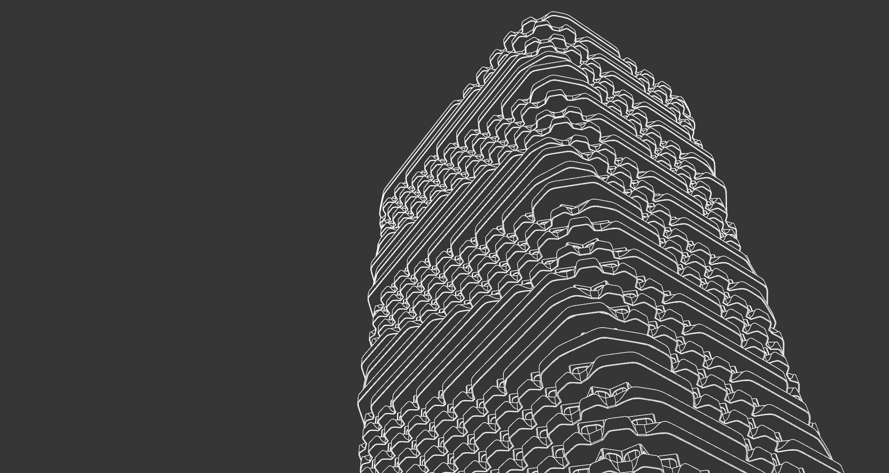
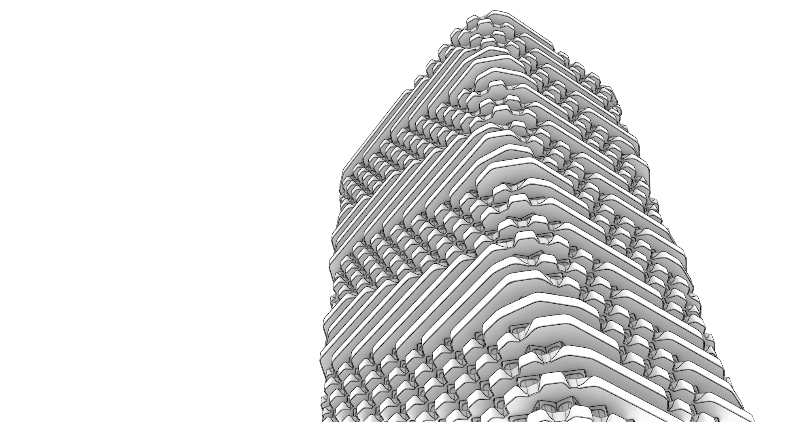
Clips loop silently as they come into view. Use the player controls to pause, scrub or view fullscreen. Automatic playback respects reduced-motion preferences.
Learning alongside the model
An interactive classroom, with space to interrupt, ask questions and work through errors.
I used architectural examples to connect each tool to a design decision. Students coded along as I built definitions, changed inputs and explained the resulting geometry. The emphasis was on understanding the sequence of operations well enough to adapt it independently.
Demonstration and practice
Short explanations led into hands-on tasks. The introductory class included a 20-minute site-plan drafting exercise and a 25-minute freeform canopy exercise.
Review and discussion
The course format included a 30-minute show-and-tell at the start of new sessions. Students explained their homework, discussed difficulties and received feedback before moving on.
Independent development
Homework extended the live exercises. Grouped definitions, labelled inputs and process PDFs made students’ reasoning visible alongside their final geometry.
The images below document teaching demonstrations and live-session explorations. Student submissions will be added separately.
The syllabus
A progression from geometric foundations to systems that generate, evaluate and communicate design alternatives.
| Module | Topics covered | Practice and purpose |
|---|---|---|
| Rhino foundations | Interface, scale, layers, curves, NURBS surfaces, solids, drafting and layouts. | Accurate site drawings, a freeform canopy and an architectural precedent model. |
| Mesh and SubD | Vertices, edges, faces, normals, topology, smoothness, creases and deformation. | Terrain studies and roof families, with attention to clean geometry. |
| Grasshopper fundamentals | Visual programming, data types, referenced geometry, components and wires. | Break a geometric task into inputs, operations and outputs. |
| Lists and data trees | Series, sorting, shifting, culling, cross-referencing, grafting and flattening. | Point grids and circular patterns that reveal how data organisation changes a result. |
| Surface logic and variation | Curve parameters, surface UV coordinates, reparameterisation, normals and mapping. | Place repeated elements on changing surfaces and compare geometric alternatives. |
| Design optimisation | Variables, fitness functions, evolutionary search, Galapagos and competing objectives. | Frame an architectural problem as a measurable search, then interpret trade-offs. |
| Visualisation and animation | Image-based prompting, camera, material, context, lighting, editing and video. | Explore how an existing model supports different conceptual visual narratives. |
The 66 scheduled hours cover the full weekend programme. The presentations do not specify a separate hour allocation for each module.
Reading and constructing form
Choosing an appropriate geometric representation before building a complex model.
The early sessions established the differences between NURBS surfaces, meshes and SubD geometry. We worked with control points, surface continuity and clean topology, then considered how these choices affect editing, drawing output and later parametric operations.
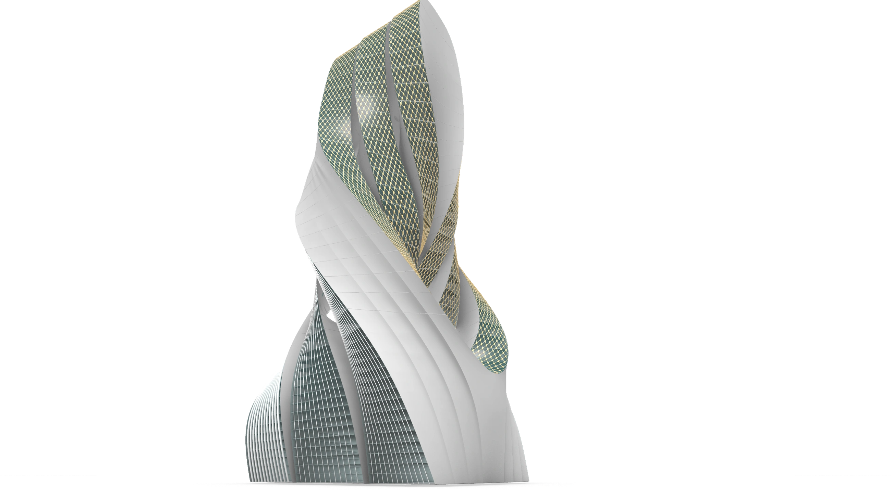
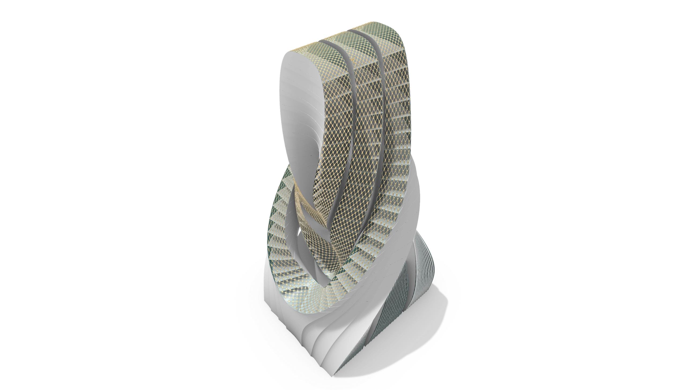
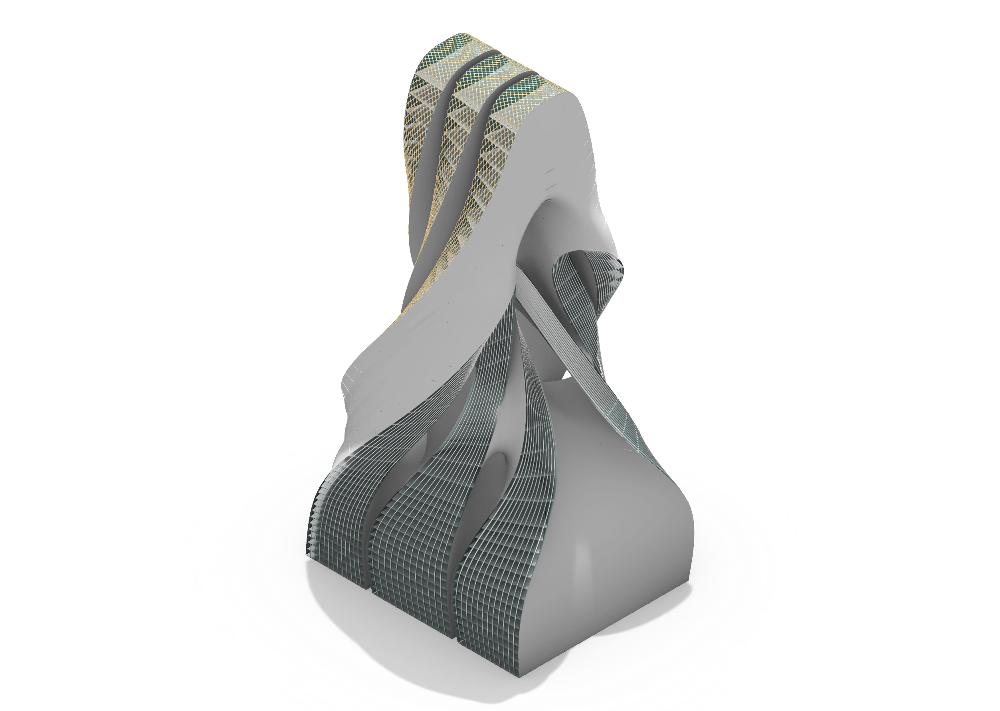
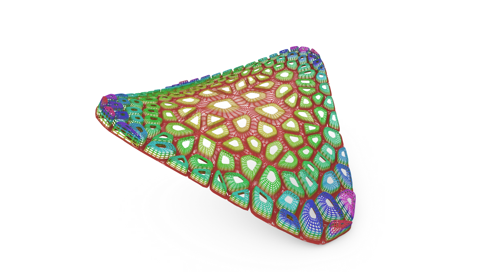
Precedent exercises gave these tools an architectural scale. The Rolex Learning Center brief asked students to reconstruct an undulating roof and slab with openings. The KAPSARC-inspired brief used multiple SubD roof types and site regions to explore deformation and surface mapping.
Mesh geometry and SubD tools
The course covered the differences between NURBS surfaces and meshes, including vertices, edges, face types and topology. Students explored a broad range of SubD tools, from constructing primitives to selecting face and edge loops, adding creases, bridging, beveling, extruding, insetting and inserting edges.
We used these tools to understand how local edits affect the surrounding geometry and to develop smooth architectural forms with controllable topology.
Organising relationships
A definition becomes useful when its geometry and data structure remain understandable as inputs change.
I introduced Grasshopper as a visible chain of decisions. We began with simple functions and referenced Rhino geometry, then moved to lists and data trees. Shifting or culling a list changes which elements connect; grafting or flattening changes how groups interact.
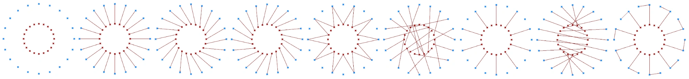
Later exercises connected these operations to curve parameters and surface UV coordinates. Reparameterising to a 0–1 domain gave students a consistent way to locate points on different curves and surfaces, while keeping the distinction between a parameter and a physical distance clear.
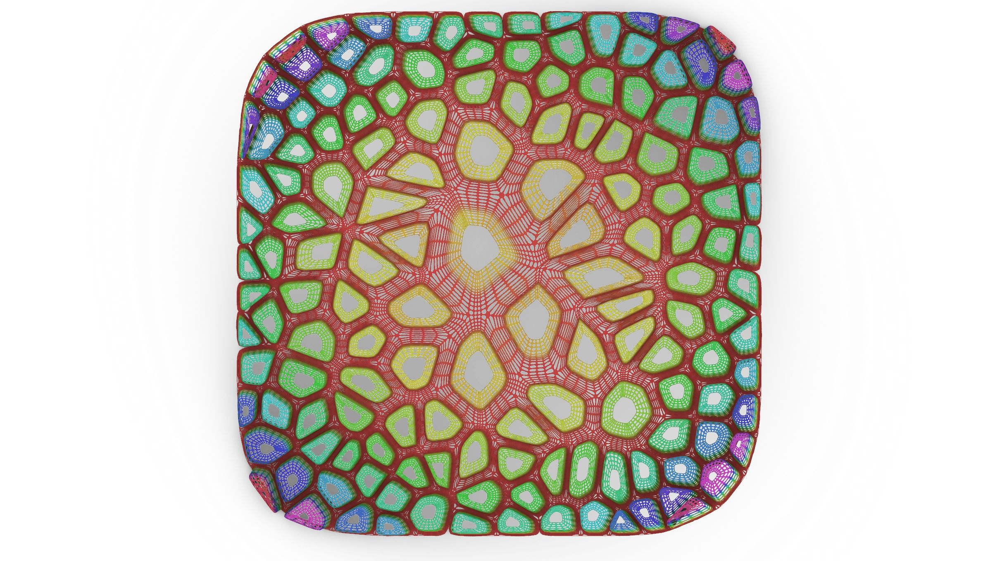
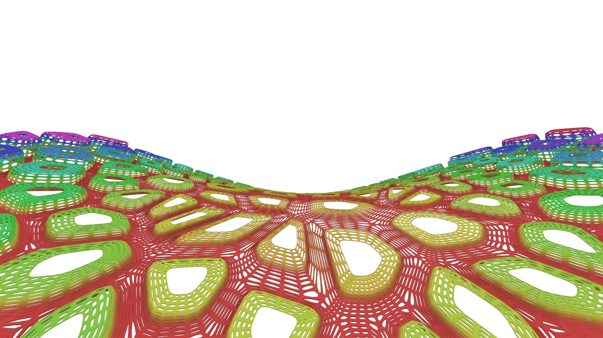
Curve parameters and surface domains
Iterative mesh growth / Anemone
These explorations start with a simple mesh and use Anemone loops to repeat the growth operation, allowing random changes to accumulate over successive iterations.
Data trees / Modelling BIG’s Serpentine Pavilion
This exercise uses the organisation of a data tree to identify neighbouring boxes. Relative Tree Item extracts diagonal neighbours, allowing the middle box to be extruded into contact with the surrounding corner-adjacent boxes.
Building a facade system
The tower studies connect overall massing to repeated balconies, floor edges and local variation.
During live sessions, we explored how a tower could be described through a sequence of profiles and repeated elements. Wireframe views exposed the underlying construction; shaded views helped us discuss rhythm, depth and the effect of changing the geometric rules.
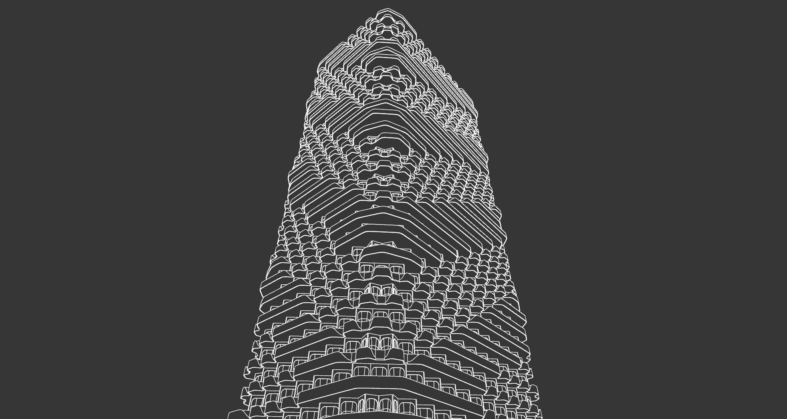
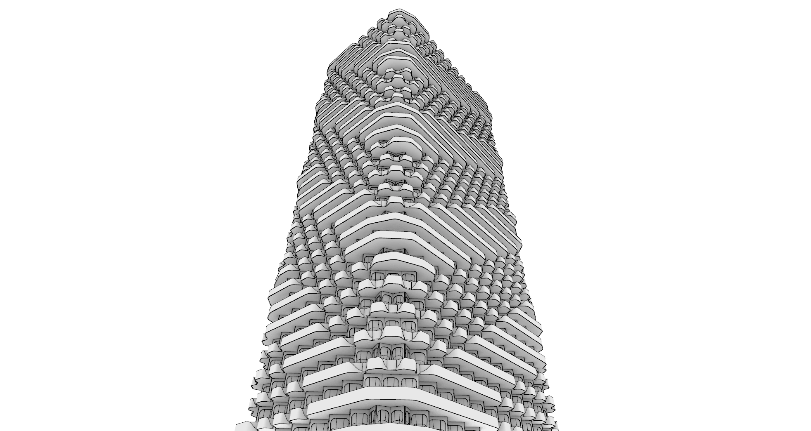
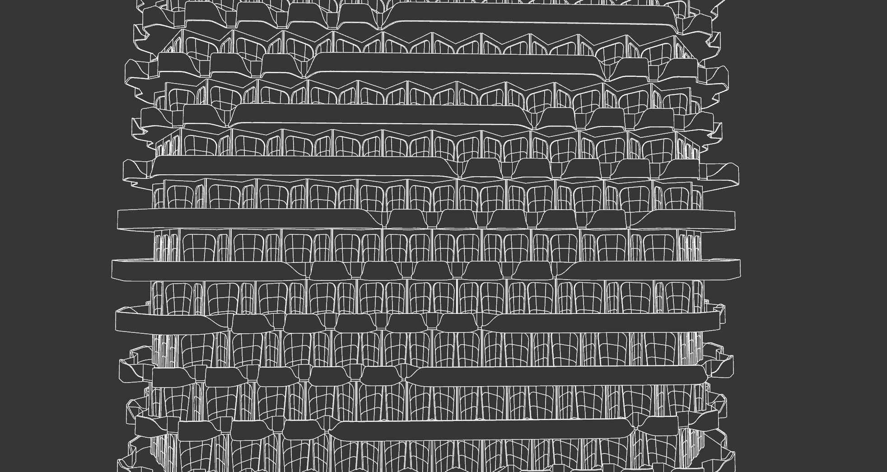
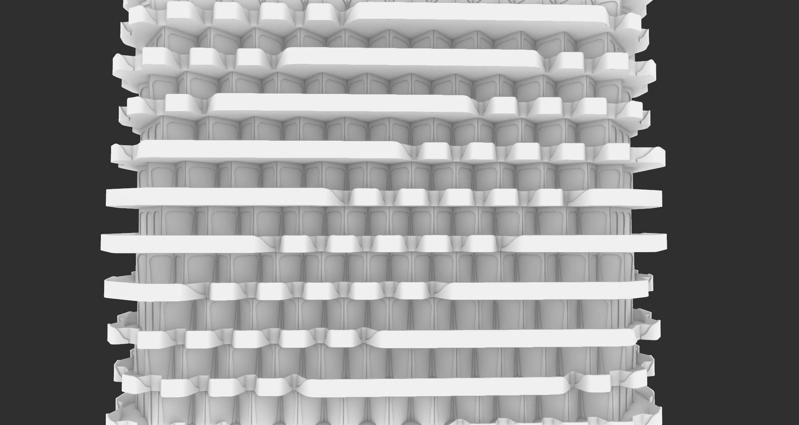
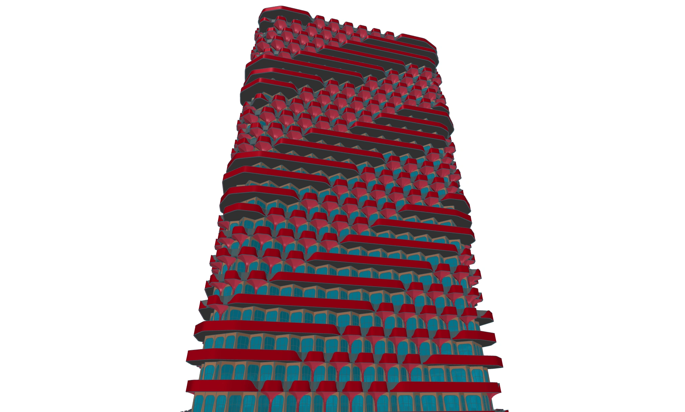
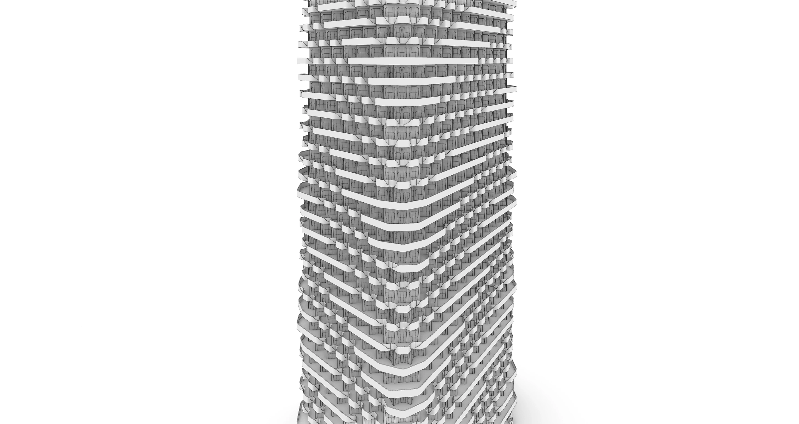
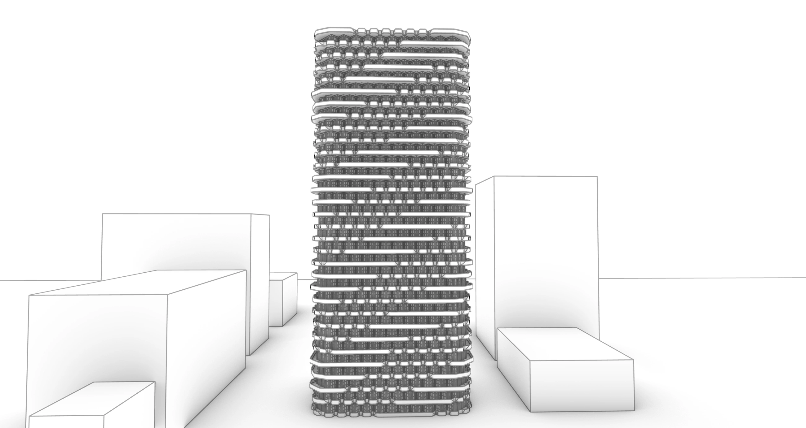
Making the objective explicit
An introduction to search methods and the architectural decisions behind a fitness function.
The optimisation sessions began with the problem formulation: what can change, what stays fixed and how will a result be evaluated? Students learned to identify a model’s adjustable parameters and connect them to a measurable fitness value before running a solver.
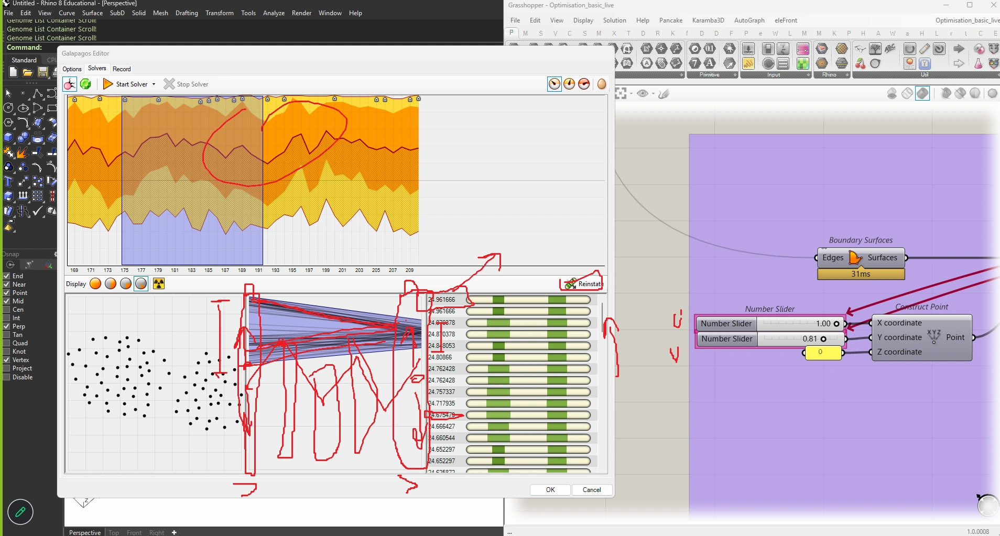
We covered evolutionary search and simulated annealing through Galapagos, including the balance between exploring new possibilities and refining promising results. Multi-objective examples introduced competing goals and Pareto trade-offs. A solver’s output needed interpretation rather than an assumption that every run had found a global optimum.
The ideation task asked students to propose an architectural optimisation problem, identify slider-controlled variables, define a fitness function and draw a workflow explaining why the search would be useful.
References used in the lecture


Homework and feedback
Assignments tested whether students could reconstruct a workflow and explain the decisions behind it.
Architectural modelling / Rolex Learning Center
Scale a reference plan, model the undulating roof and slab, trace and cut openings, and add glazing. Check headroom and human scale, then prepare organised Rhino layers and drawing layouts with dimensions.
Precedent: SANAA. Focus: accuracy, surface construction and architectural documentation.Roof systems / KAPSARC-inspired modelling
Develop at least two SubD roof types across at least two site regions. Explore CageEdit and FlowAlongSrf, check surface directions and document the base geometry, transformed roofs and populated result.
Precedent: Zaha Hadid Architects. Focus: geometric families, deformation and mapping.List manipulation / Circular patterns
Connect points on concentric circles using shift, reverse, randomisation, jitter and culling. Compare how a small change in data order produces a different pattern.
Focus: understanding the effect of list operations.Mathematical form / Spirals and attractors
Construct a spiral using sine, cosine and point generation. Build a circle population controlled by distance to an attractor curve, varying at least two properties such as radius, height or colour. Submit at least three variations with a grouped, labelled definition and a short explanation of the sliders.
Deliverables: process PDF, Rhino model and Grasshopper definition.Architectural logic / Temple Galaxia
Recreate a personal parametric interpretation of Temple Galaxia by Arthur Mamou-Mani Architects. The brief prioritised understanding its computational logic and documenting the model in a PDF alongside Rhino and Grasshopper files.
Focus: translating a precedent into a controllable system.Optimisation / Problem formulation
Describe a design problem, define its parametric model and adjustable variables, and explain measurable fitness criteria through a workflow diagram.
Focus: connecting design intention to evaluation.
Homework reviews asked students to explain both the geometry and the definition. This made the review a discussion of method, including what worked, where the logic broke down and how to develop the model further.
The model and its interpretation
AI-assisted visualisation as a teaching exploration of material, atmosphere and context.
The visualisation module followed a sequence from a source image to a written prompt, a rendered interpretation, editing or upscaling, and animation. We broke prompts into camera position, subject geometry, architectural system, materials, context and lighting.
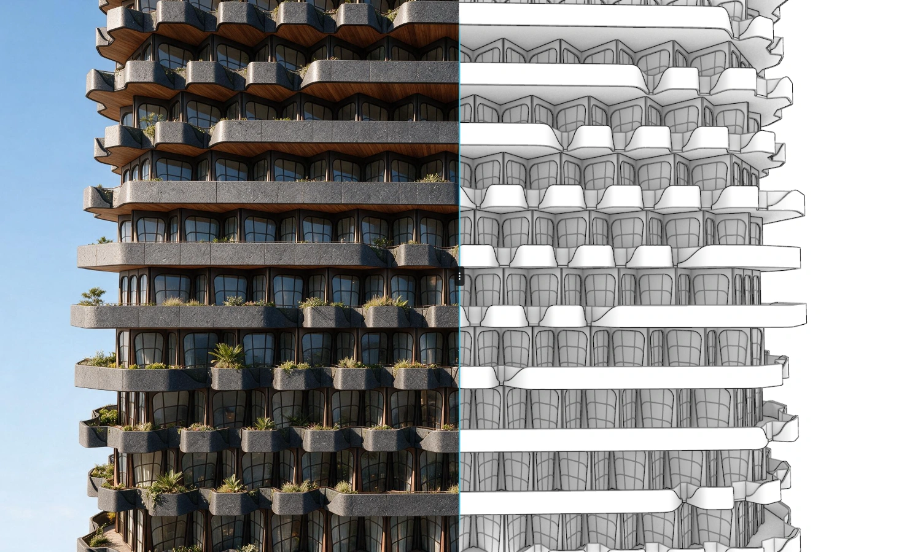
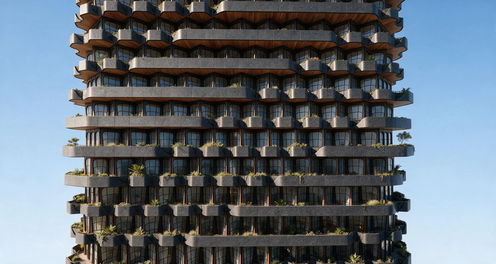
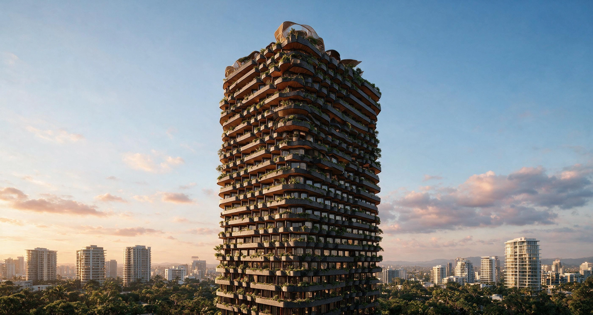
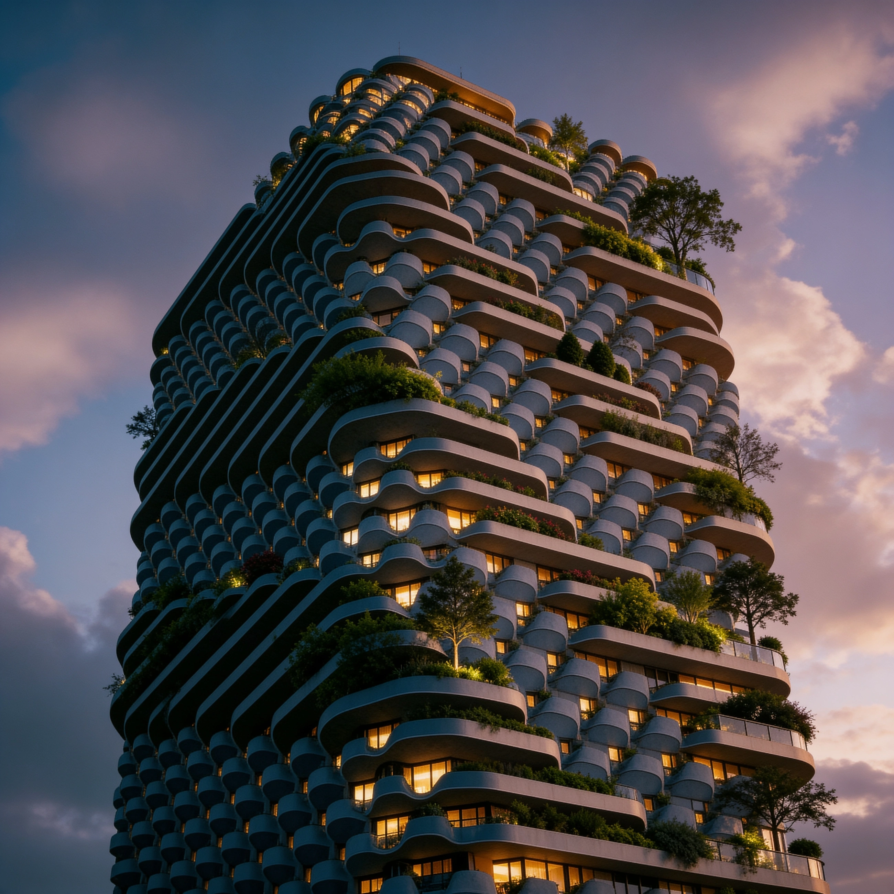
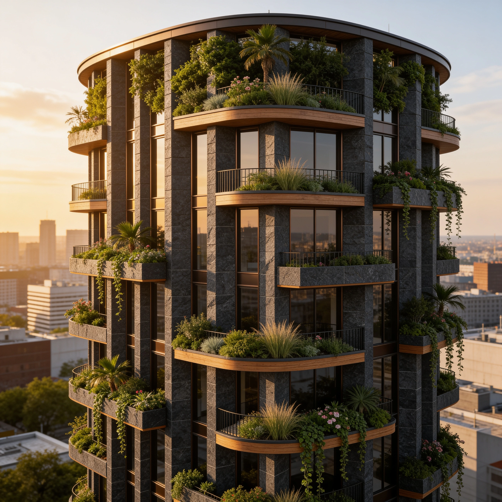
We also discussed prompts for top views, conceptual sections, facade details and camera movement. These images explore communication and visual possibilities; generated construction details and spatial changes are conceptual and require checking against the original model.